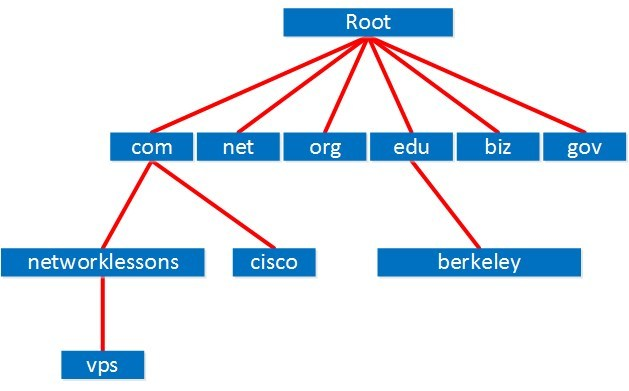
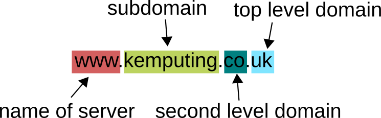
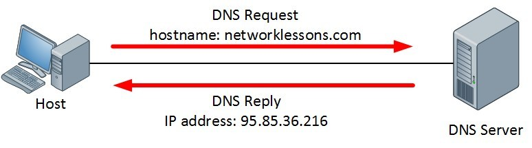
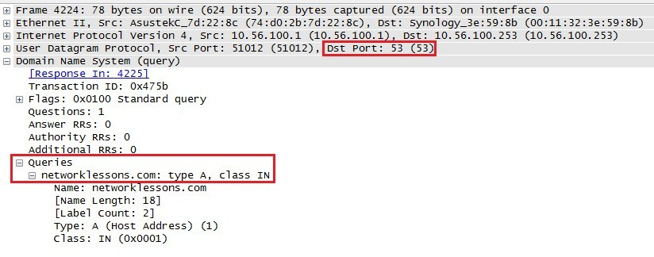
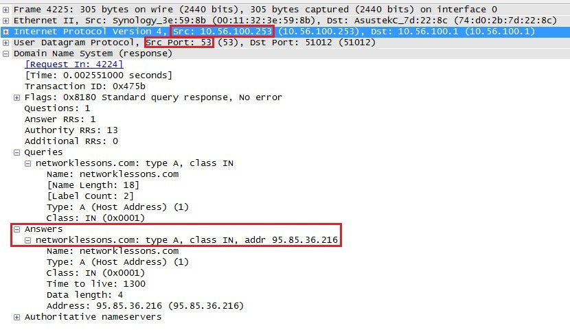

Unit 2: Network Fundamentalsالوحدة الثانية: أساسيات الشبكات
Introduction to DNS (Domain Name System)
How domain names are translated into IP addresses across the global networkكيفية تحويل أسماء النطاقات إلى عناوين IP عبر الشبكة العالمية
Quick recap quizاختبار مراجعة سريع
What is DNS?ما هو نظام DNS؟
SOURCE MATERIALالنص الأصلي من المرجع
DNS (Domain Name System) is a network protocol that we use to find the IP addresses of hostnames. Computers use IP addresses to communicate, but for us humans, it is far more convenient to use domain names and hostnames instead of memorizing long strings of numbers.
نظام DNSDomain Name System — نظام أسماء النطاقات هو بروتوكول شبكة نستخدمه للبحث عن عناوين IP لأسماء الأجهزة والمواقع. أجهزة الكمبيوتر بتتعامل مع عناوين IP، لكن بالنسبة لينا كبشر، الأسهل بكتير نستخدم أسماء النطاقات بدلاً من حفظ أرقام طويلة ومعقدة.
If you want, you could visit networklessons.com by going directly to its IP address (for example, 95.85.36.216), but typing in the domain name networklessons.com is much easier and more intuitive.
لو تحب، تقدر تزور موقع networklessons.com بكتابة عنوان الـ IP المباشر بتاعه (مثلاً 95.85.36.216)، لكن كتابة اسم الموقع networklessons.com أسهل بكتير وبديهية أكتر لأي مستخدم.
DNS is distributed and hierarchical. There are thousands of DNS servers worldwide, but none of them has a complete database containing all hostnames and IP addresses in the world. A DNS server might have information for certain domains, but it queries other DNS servers when it does not know the answer.
نظام DNS نظام موزّع وهرمي (Distributed & Hierarchical). في آلاف السيرفرات حول العالم، لكن مفيش سيرفر واحد عنده قاعدة بيانات كاملة لكل الأسماء والـ IPs اللي في كوكب الأرض. سيرفر الـ DNS ممكن يكون عنده معلومات نطاقات معينة، وبيسأل سيرفرات تانية لما يجيله استفسار عن نطاق مش عنده.
AUTHOR NOTEملاحظة إضافية للتوضيح
Think of DNS as the 'Contacts App' on your smartphone. You don't memorize the 11-digit phone numbers of all your friends; you simply click on 'Ahmed' or 'Sarah', and your phone automatically dials the underlying number. DNS does the exact same thing for the entire Internet: it maps friendly names to numeric IP addresses.
تخيل الـ DNS زي تطبيق 'جهات الاتصال' (Contacts) في موبايلك. أنت مش حافظ أرقام تليفونات صحابك المكونة من 11 رقم؛ أنت بتضغط على اسم 'أحمد' أو 'سارة'، والموبايل هو اللي بيتصل بالرقم الفعلي. الـ DNS بيعمل نفس الوظيفة دي بالظبط لكل أجهزة الإنترنت: بيربط الأسماء السهلة بعناوين IP الرقمية.
The DNS Hierarchyالهيكل الهرمي لنظام DNS
SOURCE MATERIALالنص الأصلي من المرجع
DNS is organized into an inverted tree structure, starting at the root and branching downward into Top-Level Domains, Second-Level Domains, and Subdomains:
شجرة الـ DNS بتترتب بشكل هرمي مقلوب، بتبدأ من الجذر (Root) في القمة وتتفرع للأسفل:
. (Root Level — 13 Logical Root Server Clusters: a.root-servers.net to m.root-servers.net)
.com (gTLD)
.net (gTLD)
.org (gTLD)
.edu (gTLD)
.eg / .uk (ccTLD)
networklessons.com
cisco.com
google.com
vps.networklessons.com
tools.cisco.com
The Inverted Tree Structure of DNS Hierarchyالهيكل الهرمي المقلوب لنظام أسماء النطاقات

🖼️ DNS Hierarchy Diagram

🖼️ DNS Domain Namespace Vector
1. Root Name Servers: At the very top are 13 logical root server authorities (named from a.root-servers.net to m.root-servers.net). These contain pointer information for all Top-Level Domain (TLD) extensions.
1. سيرفرات الجذر (Root Name Servers): في قمة الهرم يوجد 13 عنوان منطقي لسيرفرات الجذر (من a.root-servers.net إلى m.root-servers.net). دي بتعرف أماكن السيرفرات المسؤولة عن كل امتدادات النطاقات العليا.
2. Top-Level Domains (TLDs): Divided into generic TLDs (gTLD) like .com, .org, .net, .biz, .edu, and country-code TLDs (ccTLD) like .eg (Egypt), .uk (United Kingdom), .de (Germany), and .ca (Canada).
2. نطاقات المستوى الأعلى (TLD): بتنقسم لنطاقات عامة (gTLD) زي .com و .org و .net، ونطاقات دولية جغرافية (ccTLD) زي .eg (مصر)، .uk (بريطانيا)، و .de (ألمانيا).
3. Second-Level Domains: This is where organization domain names live, such as networklessons, cisco, or google, under a specific TLD.
3. نطاقات المستوى الثاني (Second-Level Domains): هنا بيعيش اسم الشركة أو المؤسسة اللي بيتم حجزها وتسجيلها، زي networklessons أو cisco تحت نطاق .com.
4. Subdomains and Hostnames: Further down the tree, you find specific machines or services. For example,
vps.networklessons.com is the hostname of the VPS running the site, and tools.cisco.com is a subdomain for Cisco tools.4. النطاقات الفرعية وأسماء الأجهزة (Subdomains & Hostnames): أعمق في الشجرة بنلاقي أجهزة أو خدمات معينة. مثلاً
vps.networklessons.com هو اسم خادم الـ VPS، و tools.cisco.com نطاق فرعي لأدوات سيسكو.AUTHOR NOTEملاحظة إضافية للتوضيح
Common Cisco Exam / Interview Fact: People often say 'there are only 13 DNS root servers in the world.' In reality, there are 13 logical IP addresses managed by 12 distinct organizations (ICANN, NASA, Verisign, etc.), but each address is backed by hundreds of physical Anycast servers worldwide! Today there are over 1,500+ physical root server instances globally for maximum resilience and redundancy.
معلومة امتحانات ومقابلات سيسكو الشهيرة: كتير بيقولوا 'في 13 سيرفر جذر بس في العالم كله'. الحقيقة إنهم 13 عنوان IP منطقي بتديرهم 12 مؤسسة دولية (زي ICANN و NASA و Verisign)، لكن كل عنوان وراه مئات السيرفرات الفيزيائية الموزعة حول العالم بتقنية Anycast! حالياً في أكتر من 1,500 سيرفر فيزيائي شغالين في نفس اللحظة عشان يضمنوا إن خدمة الإنترنت ما تقعش أبداً.
FQDN & The Trailing Root Dotالاسم المؤهل الكامل FQDN ونقطة الجذر
SOURCE MATERIALالنص الأصلي من المرجع
Between each DNS label in a name we use a period character (.). Officially, a complete domain name must also end with a trailing dot representing the root, although web browsers hide it automatically for convenience.
بين كل مقطع والتاني في اسم النطاق بنستخدم علامة النقطة (.). ورسمياً وفقاً لمعايير الإنترنت، الاسم الكامل لازم ينتهي بنقطة في آخره بتمثل الجذر (Root)، مع إن متصفحات الويب بتخفيها تلقائياً لتسهيل الاستخدام.
Take a close look at these two examples:
vps.networklessons.com. (with trailing dot)vps.networklessons.com (without trailing dot)دقق في المثالين دول:
vps.networklessons.com. (بنقطة في النهاية)vps.networklessons.com (بدون نقطة)Writing down a hostname with its complete domain structure all the way back to the root is called an FQDN (Fully Qualified Domain Name).
كتابة اسم الجهاز مع تسلسل نطاقاته بالكامل وصولاً للجذر يُسمى FQDNFully Qualified Domain Name — اسم النطاق المؤهل بالكامل.
| Componentالمكوّن | Example Labelالمثال | Role in DNSالدور في شجرة DNS |
|---|---|---|
| . | . (trailing) | Root of the entire DNS hierarchyجذر شجرة الـ DNS بالكامل |
| com | .com | Top-Level Domain (TLD)نطاق المستوى الأعلى |
| networklessons | networklessons | Second-Level Domain registered to ownerنطاق المستوى الثاني المسجل للمالك |
| vps | vps | Specific hostname / server within that domainاسم الجهاز أو السيرفر المحدد داخل النطاق |
AUTHOR NOTEملاحظة إضافية للتوضيح
In BIND DNS zone configuration files and Cisco domain setups, forgetting the trailing dot (.) on a domain name is a classic engineer error! If you write 'mail.example.com' without the trailing dot inside a zone record, the server will append the origin domain again, creating 'mail.example.com.example.com.' Always remember the trailing dot in raw DNS configurations.
في إعدادات ملفات مناطق الـ DNS (Zone Files) وإعدادات سيسكو، نسيان النقطة الأخيرة (.) خطأ شائع جداً بيقع فيه المهندسون! لو كتبت 'mail.example.com' من غير نقطة في آخرها داخل إعدادات الـ Zone، السيرفر تلقائياً هيضيف اسم الدومين مرة تانية وتبقى 'mail.example.com.example.com.' افتكر دايماً إن النقطة الأخيرة هي اللي بتوقف التكرار وبتعلن الوصول للجذر.
How DNS Resolution Worksكيف تعمل عملية استعلام وترجمة DNS؟
SOURCE MATERIALالنص الأصلي من المرجع
When a client needs to communicate with a hostname, it goes through a resolution process. First, let's examine what a client has configured on Windows using
ipconfig /all:لما جهاز يحتاج يكلم موقع أو جهاز باسمه، بيمر بعملية ترجمة (Resolution). الأول، خلينا نشوف إعدادات الجهاز على ويندوز بأمر
ipconfig /all:C:\Users\Vmware> ipconfig /all | more
Windows IP Configuration
Host Name . . . . . . . . . . . . : vmware
DNS Suffix Search List. . . . . . : networklessons.local
IPv4 Address. . . . . . . . . . . : 10.56.100.1
Subnet Mask . . . . . . . . . . . : 255.255.255.0
Default Gateway . . . . . . . . . : 10.56.100.254
DNS Servers . . . . . . . . . . . : 10.56.100.253
The host is configured to use 10.56.100.253 as its local DNS server. When the user opens a browser to visit
networklessons.com, the host sends a DNS query to this server.الجهاز مضبوط إنه يستخدم 10.56.100.253 كسيرفر DNS محلي. لما المستخدم يفتح المتصفح ويدخل
networklessons.com، الجهاز بيبعت طلب استعلام (DNS Query) للسيرفر ده.
🖼️ DNS Resolution Flow
1. PC (10.56.100.1)Query: "Where is networklessons.com?" →Local DNS (10.56.100.253)
Local DNS Resolver→ Queries Root Servers (.) → TLD Servers (.com) → Authoritative NS
Local DNS (10.56.100.253)← Reply: "networklessons.com is at 95.85.36.216"PC (10.56.100.1)
Step-by-Step DNS Resolution Flowمخطط خطوات استعلام وترجمة اسم النطاق
A local DNS server typically only has authority over local network hostnames. When it needs to resolve an Internet address, it performs a lookup using the Internet root servers, TLD servers, or forwards the query to the ISP's recursive DNS server.
سيرفر الـ DNS المحلي عادةً بيكون مسؤول عن أسماء أجهزة الشبكة الداخلية بس. ولما يحتاج يترجم عنوان على الإنترنت، بيستعلم من سيرفرات الجذر و TLD أو يوجّه الطلب لسيرفر الـ DNS الخاص بشركة الإنترنت (ISP).
AUTHOR NOTEملاحظة إضافية للتوضيح
Crucial Interview Concept: Recursive vs Iterative Queries.
• Recursive Query: The client tells the local DNS server: 'Find me the IP address, and don't come back until you have the final answer.' The server does all the legwork on the client's behalf.
• Iterative Query: The DNS server queries upstream servers (Root, TLD, Authoritative). Each upstream server says: 'I don't have the final IP, but here is the referral to the next server down the chain who might know.'
• Recursive Query: The client tells the local DNS server: 'Find me the IP address, and don't come back until you have the final answer.' The server does all the legwork on the client's behalf.
• Iterative Query: The DNS server queries upstream servers (Root, TLD, Authoritative). Each upstream server says: 'I don't have the final IP, but here is the referral to the next server down the chain who might know.'
سؤال مقابلات شركات الاتصالات الشهير: الفرق بين الاستعلام التكراري والاستعلام المتكرر (Recursive vs Iterative):
• الاستعلام التكراري (Recursive): العميل (الـ PC) بيقول للـ DNS المحلي: 'هاتلي الـ IP النهائي، ومتترجعليش إلا بالحل الكامل.' السيرفر بيتولى كل خطوات البحث نيابة عن الجهاز.
• الاستعلام التتابعي (Iterative): سيرفر الـ DNS بيكلم سيرفرات الإنترنت؛ كل سيرفر يقوله: 'أنا معنديش الـ IP النهائي، بس اتفضل عنوان السيرفر اللي بعدي في الشجرة هو اللي هيفيدك'.
• الاستعلام التكراري (Recursive): العميل (الـ PC) بيقول للـ DNS المحلي: 'هاتلي الـ IP النهائي، ومتترجعليش إلا بالحل الكامل.' السيرفر بيتولى كل خطوات البحث نيابة عن الجهاز.
• الاستعلام التتابعي (Iterative): سيرفر الـ DNS بيكلم سيرفرات الإنترنت؛ كل سيرفر يقوله: 'أنا معنديش الـ IP النهائي، بس اتفضل عنوان السيرفر اللي بعدي في الشجرة هو اللي هيفيدك'.
Transport Layer: UDP vs TCP Port 53بروتوكول النقل: UDP أم TCP على المنفذ 53؟
SOURCE MATERIALالنص الأصلي من المرجع
DNS operates using port number 53, but an important question is: does DNS use TCP or UDP? The answer is that DNS uses both, depending on the scenario:
نظام DNS بيشتغل على البورت رقم 53، لكن السؤال الأهم: هل بيستخدم TCP ولا UDP؟ الإجابة إنه بيستخدم الاثنين، حسب طبيعة العملية:
| Protocolالبروتوكول | Portالمنفذ | When is it Used?متى يُستخدم؟ | Reasonالسبب |
|---|---|---|---|
| UDP | 53 | Standard client queries & lookup requestsاستعلامات الأجهزة العادية والتصفح اليومي | Fast, lightweight, minimal overhead (no 3-way handshake needed for quick requests)سريع وخفيف جداً، مفيش استهلاك للشبكة بمصافحة ثلاثية لسؤال وإجابة سريعة |
| TCP | 53 | Zone Transfers (AXFR/IXFR), responses > 512 bytes, DNSSECنقل المناطق بين السيرفرات، والردود الأكبر من 512 بايت، وتأمين DNSSEC | Reliability is mandatory to avoid database corruption; packet size exceeds standard UDP payloadالموثوقية ضرورية لمنع تلف قاعدة البيانات، وحجم البيانات كبير ميستحملش فقدان حزم |
For regular web browsing, almost 100% of DNS traffic between endpoints and resolvers is UDP port 53. If a UDP reply is too large (traditionally over 512 bytes), the DNS server sets the Truncation bit (TC) in the header, signalling the client to retry using TCP port 53.
في التصفح العادي، تقريباً 100% من ترافيك الـ DNS بين جهازك والسيرفر بيكون UDP بورت 53. لكن لو حجم الرد كبير زيادة عن 512 بايت، السيرفر بيفعّل بت الاقتطاع (TC Bit) عشان يقول للجهاز: البيانات أكبر من الـ UDP، أعد الطلب باستخدام TCP بورت 53.
AUTHOR NOTEملاحظة إضافية للتوضيح
Top Exam & Interview Trap Question: 'Does DNS use UDP or TCP?' — Never just say 'UDP'! The correct, professional answer that impresses interviewers is: 'DNS uses UDP port 53 for standard host queries because of speed and low overhead, but uses TCP port 53 for Zone Transfers between primary and secondary servers, or when DNS responses exceed 512 bytes or utilize DNSSEC.'
أشهر فخ في امتحانات ومقابلات سيسكو: 'الـ DNS بيستخدم UDP ولا TCP؟' — إياك تجاوب بكلمة واحدة زي 'UDP بس'! الإجابة الهندسية الاحترافية هي: 'الـ DNS بيستخدم UDP بورت 53 لطلبات الاستعلام السريعة لتقليل الحمل، وبيستخدم TCP بورت 53 في نقل المناطق (Zone Transfers) بين السيرفرات وللبيانات اللي حجمها بيتعدى 512 بايت أو عند تفعيل DNSSEC.'
Wireshark Packet Analysisتحليل حزم DNS في برنامج Wireshark
SOURCE MATERIALالنص الأصلي من المرجع
Let's look at the actual packet capture when the host opens a web browser to visit
networklessons.com:تعالوا نشوف حزم البيانات الحقيقية من برنامج Wireshark لما الجهاز بيفتح المتصفح ويزور
networklessons.com:
🖼️ Wireshark DNS Query Capture
Frame 1: 76 bytes on wire
Ethernet II, Src: Intel_7d:22:8c, Dst: Router_10:00:fe
Internet Protocol Version 4, Src: 10.56.100.1, Dst: 10.56.100.253
User Datagram Protocol, Src Port: 54821, Dst Port: 53 (DNS)
Domain Name System (query)
Transaction ID: 0x2b4c
Flags: 0x0100 Standard query
Queries: networklessons.com: type A, class IN
Ethernet II, Src: Intel_7d:22:8c, Dst: Router_10:00:fe
Internet Protocol Version 4, Src: 10.56.100.1, Dst: 10.56.100.253
User Datagram Protocol, Src Port: 54821, Dst Port: 53 (DNS)
Domain Name System (query)
Transaction ID: 0x2b4c
Flags: 0x0100 Standard query
Queries: networklessons.com: type A, class IN
Wireshark Capture Details: DNS Queryتفاصيل التقاط Wireshark: حزمة استعلام DNS
The host sends a UDP packet to destination port 53 on the DNS server (10.56.100.253). The query specifically asks for an A record (IPv4 address) for
networklessons.com.الجهاز بيبعت حزمة UDP للبورت 53 على سيرفر الـ DNS (10.56.100.253). الطلب بيسأل تحديداً عن سجل من النوع A record (عنوان IPv4) لموقع
networklessons.com.
🖼️ Wireshark DNS Answer Capture
Frame 2: 92 bytes on wire
Internet Protocol Version 4, Src: 10.56.100.253, Dst: 10.56.100.1
User Datagram Protocol, Src Port: 53, Dst Port: 54821
Domain Name System (response)
Transaction ID: 0x2b4c
Flags: 0x8180 Standard query response, No error
Queries: networklessons.com: type A, class IN
Answers:
networklessons.com: type A, class IN, addr 95.85.36.216
Internet Protocol Version 4, Src: 10.56.100.253, Dst: 10.56.100.1
User Datagram Protocol, Src Port: 53, Dst Port: 54821
Domain Name System (response)
Transaction ID: 0x2b4c
Flags: 0x8180 Standard query response, No error
Queries: networklessons.com: type A, class IN
Answers:
networklessons.com: type A, class IN, addr 95.85.36.216
Wireshark Capture Details: DNS Responseتفاصيل التقاط Wireshark: حزمة رد DNS
The DNS server responds with IP address 95.85.36.216. Once the client receives this response, it can immediately begin the TCP 3-way handshake to establish a web session on port 80/443.
سيرفر الـ DNS بيرد بعنوان الـ IP وهو 95.85.36.216. بمجرد ما الجهاز يستلم الرد، يقدر فوراً يبدأ مصافحة TCP الثلاثية (3-way handshake) لفتح جلسة الويب على بورت 80 أو 443.
AUTHOR NOTEملاحظة إضافية للتوضيح
Notice the Transaction ID (0x2b4c in the capture). Because UDP is connectionless and stateless, DNS uses this 16-bit Transaction ID to match the incoming response with the exact query that was sent. If the transaction ID in the reply doesn't match the query, the client discards it.
لاحظ وجود معرّف المعاملة (Transaction ID بقيمة 0x2b4c في الصورة). بما إن UDP بروتوكول بدون اتصال وبدون حالات (Stateless)، الـ DNS بيستخدم رقم المعاملة ده المكون من 16 بت عشان يطابق الرد اللي راجع مع نفس السؤال اللي اتبعت بالضبط. لو الرقمين مش متطابقين، الجهاز بيرمي الحزمة فوراً لحماية نفسه من الهجمات.
Common DNS Record Typesأهم أنواع سجلات DNS التي يحتاجها مهندس الشبكات
SOURCE MATERIALالنص الأصلي من المرجع
DNS servers store various types of Resource Records (RR). For the CCNA exam and real enterprise networking, you must recognize these core records:
سيرفرات الـ DNS بتخزن سجلات الموارد (Resource Records). لامتحان CCNA وبيئة العمل الواقعية، لازم تكون عارف السجلات الأساسية دي:
| Record Typeنوع السجل | Full Nameالاسم الكامل | Purpose & Descriptionالوظيفة والاستخدام |
|---|---|---|
| A | Address Record | Maps a hostname to an IPv4 address (e.g. example.com → 192.0.2.1)يربط اسم النطاق بعنوان IPv4 |
| AAAA | IPv6 Address (Quad-A) | Maps a hostname to a 128-bit IPv6 address (e.g. example.com → 2001:db8::1)يربط اسم النطاق بعنوان IPv6 مكون من 128 بت |
| CNAME | Canonical Name | An alias for another domain name (e.g. www.example.com points to example.com)اسم مستعار يشير إلى اسم نطاق رئيسي آخر |
| MX | Mail Exchanger | Specifies mail servers responsible for receiving emails for the domain with a priority scoreيحدد خوادم البريد الإلكتروني المسؤولة عن استقبال الإيميلات مع رقم أولوية |
| PTR | Pointer Record | Used in Reverse DNS (rDNS): maps an IP address back to its hostnameيُستخدم في البحث العكسي: تحويل عنوان IP إلى اسم النطاق المقابل له |
| NS | Name Server | Identifies the authoritative nameservers for a given DNS zoneيحدد أسماء السيرفرات الرسمية المعتمدة للمنطقة |
| SOA | Start of Authority | Contains administrative info about the zone: primary master server, admin email, serial number, refresh timersيحتوي على البيانات الإدارية الأساسية للمنطقة ورقم الإصدار ومؤقتات التحديث |
| TXT | Text Record | Holds human/machine-readable text; commonly used for email security (SPF, DKIM, DMARC)يخزن نصوص متنوعة؛ يُستخدم حالياً بكثرة في تأمين البريد وحمايته من التزوير |
AUTHOR NOTEملاحظة إضافية للتوضيح
Why is IPv6 record called 'AAAA'? Because IPv4 addresses are 32 bits (1 A), while IPv6 addresses are 128 bits — exactly 4 times longer than IPv4! Hence, four A's: 'Quad-A'.
ليه سجل الـ IPv6 اتسمى 'AAAA'؟ لأن عنوان الـ IPv4 حجمه 32 بت (ويرمز له بحرف A واحد)، بينما الـ IPv6 حجمه 128 بت — يعني 4 أضعاف حجم IPv4 بالضبط! عشان كده اتسمى 'Quad-A' بأربعة حروف A.
DNS on Cisco IOS & Diagnostic Toolsإعدادات DNS على أجهزة سيسكو وأدوات التشخيص
SOURCE MATERIALالنص الأصلي من المرجع
On Cisco IOS routers and switches, DNS is enabled by default. However, there is one command every Cisco engineer learns immediately:
على روترات وسويتشات سيسكو (Cisco IOS)، خدمة DNS مفعلة افتراضياً. ولكن في أمر مشهور جداً كل مهندس سيسكو لازم يعرفه:
Router(config)# no ip domain-lookup
! Disables DNS translation for mistyped commands.
! Prevents the router from freezing and broadcasting 'Translating ... domain server (255.255.255.255)'
If you make a typo on a router prompt without this command (for example typing
shwo instead of show), the router assumes you want to Telnet to a host named 'shwo' and tries to resolve it via DNS broadcast, freezing your console for up to 30 seconds!لو غلطت في كتابة أمر في سيسكو (مثلاً كتبت
shwo بدل show)، الراوتر بيفترض إنك عايز تعمل اتصال Telnet بجهاز اسمه 'shwo' وبيحاول يترجمه عبر DNS، وده بيجمد الشاشة لمدة نص دقيقة مزعجة جداً!To configure a Cisco router to use real DNS servers for lookups, use these commands:
عشان تضبط راوتر سيسكو إنه يستخدم سيرفرات DNS حقيقية لترجمة العناوين، بتستخدم الأوامر دي:
Router(config)# ip domain-lookup
Router(config)# ip name-server 8.8.8.8 1.1.1.1
Router(config)# ip domain-name mycompany.local
Essential PC Troubleshooting Commands:
أهم أوامر التشخيص على أجهزة الكمبيوتر:
| Commandالأمر | Operating Systemنظام التشغيل | What it Doesما يفعله الأمر |
|---|---|---|
nslookup domain.com | Windows / Linux | Queries DNS server directly to test resolutionيرسل استعلاماً مباشراً لسيرفر DNS لاختبار الترجمة |
ipconfig /displaydns | Windows | Shows local DNS cache stored on the PCيعرض الذاكرة المؤقتة (Cache) للـ DNS على الجهاز |
ipconfig /flushdns | Windows | Clears local DNS resolver cache to fix stale recordsيمسح الذاكرة المؤقتة للـ DNS لحل مشاكل السجلات القديمة |
dig domain.com | Linux / macOS | Detailed, powerful DNS diagnostic toolأداة تشخيص متقدمة وتفصيلية لنظام DNS |
AUTHOR NOTEملاحظة إضافية للتوضيح
Classic NOC / Telecom Egypt Interview Scenario: A customer says 'My internet is down! I cannot open google.com or any website.' What are your systematic diagnostic steps?
1. Ask the customer to ping 8.8.8.8. If the ping succeeds, IP routing and physical connectivity are 100% fine!
2. Now ask them to ping google.com. If it fails with 'Ping request could not find host', the issue is strictly DNS.
3. Check DNS settings: run
1. Ask the customer to ping 8.8.8.8. If the ping succeeds, IP routing and physical connectivity are 100% fine!
2. Now ask them to ping google.com. If it fails with 'Ping request could not find host', the issue is strictly DNS.
3. Check DNS settings: run
ipconfig /all, check DNS IP, try ipconfig /flushdns or assign public DNS (8.8.8.8 or 1.1.1.1).سيناريو مقابلات الدعم الفني وشركات الاتصالات (NOC / Tech Support) الشهير: عميل بيتصل يقولك 'النت قاطع ومفيش أي موقع بيفتح.' إزاي تشخص المشكلة بخطوات هندسية مرتبة؟
1. اطلب منه يعمل
2. اطلب منه يعمل
3. ابدأ في حل مشكلة الـ DNS: افحص سيرفرات الـ DNS في
1. اطلب منه يعمل
ping 8.8.8.8. لو الـ ping رد بنجاح، يبقى كابل النت والراوتر والتوجيه (IP Routing) شغالين 100% سليم!2. اطلب منه يعمل
ping google.com. لو ظهرله 'could not find host'، يبقى المشكلة بنسبة 100% هي DNS بحتة!3. ابدأ في حل مشكلة الـ DNS: افحص سيرفرات الـ DNS في
ipconfig /all، جرب مسح الكاش بـ ipconfig /flushdns أو غيّر الـ DNS لـ 8.8.8.8 أو 1.1.1.1.Conclusionخلاصة الدرس
SOURCE MATERIALالنص الأصلي من المرجع
DNS is the unsung hero of the Internet, quietly mapping human-friendly names to machine-readable IP addresses in milliseconds.
نظام DNS هو الجندي المجهول في الإنترنت، بيحول الأسماء السهلة لعناوين IP رقمية في أجزاء من الثانية دون أن نشعر.
Key Takeaways for CCNA:
• DNS operates on Port 53 (UDP for client queries, TCP for zone transfers and packets > 512 bytes).
• The DNS hierarchy is an inverted tree starting at the Root (.), branching into TLDs (.com, .eg), Second-Level Domains, and Hostnames.
• A record = IPv4, AAAA record = IPv6, CNAME = alias, MX = mail, PTR = reverse lookup.
• On Cisco routers, configure
• DNS operates on Port 53 (UDP for client queries, TCP for zone transfers and packets > 512 bytes).
• The DNS hierarchy is an inverted tree starting at the Root (.), branching into TLDs (.com, .eg), Second-Level Domains, and Hostnames.
• A record = IPv4, AAAA record = IPv6, CNAME = alias, MX = mail, PTR = reverse lookup.
• On Cisco routers, configure
no ip domain-lookup to stop mistyped commands from freezing your CLI terminal.أهم نقاط امتحان سيسكو CCNA:
• الـ DNS بيشتغل على البورت 53 (UDP لطلبات الأجهزة، و TCP لنقل المناطق والبيانات الأكبر من 512 بايت).
• هيكل الـ DNS شجرة مقلوبة بتبدأ من الجذر (.) ثم النطاقات العليا TLD (.com, .eg) ثم نطاقات المستوى الثاني ثم أسماء الأجهزة.
• سجل A = لـ IPv4، سجل AAAA = لـ IPv6، سجل CNAME = اسم مستعار، سجل MX = للبريد، سجل PTR = للبحث العكسي.
• على روترات سيسكو، اكتب أمر
• الـ DNS بيشتغل على البورت 53 (UDP لطلبات الأجهزة، و TCP لنقل المناطق والبيانات الأكبر من 512 بايت).
• هيكل الـ DNS شجرة مقلوبة بتبدأ من الجذر (.) ثم النطاقات العليا TLD (.com, .eg) ثم نطاقات المستوى الثاني ثم أسماء الأجهزة.
• سجل A = لـ IPv4، سجل AAAA = لـ IPv6، سجل CNAME = اسم مستعار، سجل MX = للبريد، سجل PTR = للبحث العكسي.
• على روترات سيسكو، اكتب أمر
no ip domain-lookup لمنع تهنيج الشاشة عند كتابة أمر غلط.AUTHOR NOTEملاحظة إضافية للتوضيح
DNS Security Note: Standard DNS traffic is sent in cleartext, meaning anyone on your local network or ISP can see what domains you are visiting. Modern protocols like DoH (DNS over HTTPS) and DoT (DNS over TLS) encrypt DNS queries over TCP port 443 or 853 to ensure privacy and security.
ملاحظة أمنية متقدمة: طلبات الـ DNS العادية بتتبعت كنص واضح غير مشفر (Cleartext)، يعني أي حد على شبكتك أو مزود الخدمة يقدر يعرف أسماء المواقع اللي بتزورها. التقنيات الحديثة زي DoH (DNS over HTTPS) و DoT (DNS over TLS) بتشفر الاستعلامات دي عبر بورت 443 أو 853 لضمان الخصوصية التامة.
Lesson quizاختبار الدرس
Select an answer and check. You can toggle language for each question individually.اختر إجابة وتحقق. يمكنك تبديل اللغة لكل سؤال على حدة.